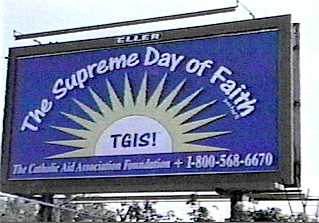
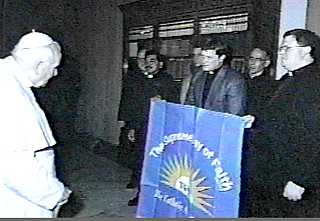
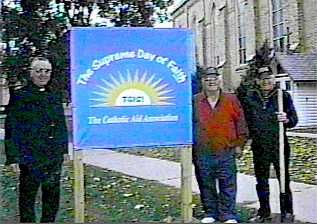

|  |  |
| One of the "Thank God It's Sunday / Sabbath" ™ billboards. | Pope John Paul II views a TGIS ™ banner. |
| TGIS ™ is a Minnesota based lay Catholic campaign to bring the Sunday Sabbath back to the Lord, which began in 1998. | |
|  |
Images are from
Talk Etc., Inc. |
| TGIS ™ banner on display outside a Catholic Church. | |